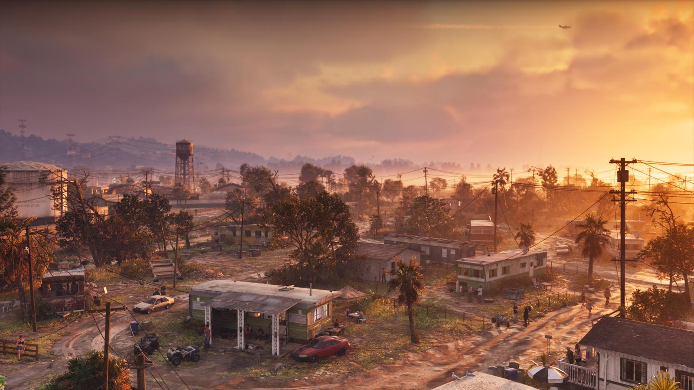

Миф: GTA 6 соберёт все награды «Игра года» в 2026
Обновлено:

- На Golden Joystick Awards 2026 GTA 6 не попадает — не проходит по датам.
- На The Game Awards формально успевает, но номинации голосуют раньше релиза.
- Rockstar обычно открывает рецензии за день до выхода игры.
- История напоминает: RDR2 проиграла «Игру года» на TGA 2018.
Миф
Правда: на одну крупную церемонию она не попадает совсем, на другую — под большим вопросом.
Логика мифа кажется железной: самая ожидаемая игра десятилетия выходит в 2026-м — кому ещё быть игрой года? Но у наград есть сроки, жюри и календарь. А GTA 6 выходит 19 ноября — в самый неудобный момент сезона.
Golden Joystick: мимо
Британская премия Golden Joystick Awards — одна из старейших в индустрии. В 2026 году GTA 6 в ней не участвует: релиз 19 ноября не попадает в окно текущего сезона. Первый шанс у игры появится только в следующем году. Никакой политики — просто календарь.
The Game Awards: успевает, но…
The Game Awards 2026 пройдут 10 декабря в театре Peacock в Лос-Анджелесе. Крайний срок выхода игры, судя по прошлым годам, — третья пятница ноября, то есть примерно 20 ноября. GTA 6 выходит 19-го. Формально — успевает на один день.
Подвох в том, что номинантов выбирают раньше дедлайна. В 2025 году, например, крайний срок был 21 ноября, а голосование жюри по номинациям прошло 4 ноября, номинантов объявили 17-го. Чтобы игра, которая выходит в конце ноября, попала в список, журналисты из жюри должны успеть в неё поиграть заранее — по копиям для рецензий.
Rockstar традиционно держит рецензии до последнего. Обзоры GTA V вышли 16 сентября 2013 года — за день до релиза. Обзоры Red Dead Redemption 2 — 25 октября 2018-го, тоже за день. Если с GTA 6 будет так же, 18 ноября — а голосование по номинациям к тому моменту, скорее всего, уже закончится. Всё решит, дадут ли жюри копии заранее.

Rockstar и награды: история
Даже «гарантированные» хиты Rockstar не забирали всё подряд:
| Игра | Что было |
|---|---|
| GTA V (2013) | Взяла «Игру года» на Spike VGX 2013. Но на DICE и BAFTA главную награду забрала The Last of Us. |
| Red Dead Redemption 2 (2018) | На The Game Awards 2018 выиграла 4 награды — лучший сюжет, музыка, звук и актёрская игра (Роджер Кларк в роли Артура Моргана). «Игру года» забрала God of War. |
Так что даже с идеальными датами у GTA 6 была бы конкуренция. А конкуренты 2026 года выходили весь год — у жюри было время их пройти.
Правда
- Golden Joystick 2026 — GTA 6 не участвует, ждём следующего сезона.
- The Game Awards 2026 — формально подходит, но попадёт ли в номинации, зависит от копий для жюри.
- Весенние премии вроде DICE Awards учитывают игры всего календарного года — там у GTA 6 полноценные шансы.
Вердикт: 🔴 миф. GTA 6 может стать игрой года — но, скорее всего, её главный наградной сезон растянется до весны 2027-го. Другие заблуждения — в подборке 10 мифов о GTA 6.
Источники: Readdork, GamesRadar+ (Golden Joystick); GameSpot, OpenCritic (The Game Awards 2026); архивы The Game Awards, DICE, BAFTA, Spike VGX.